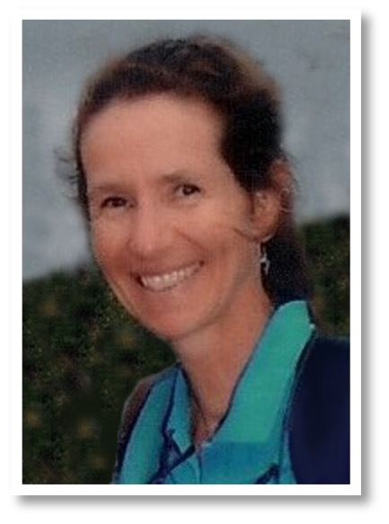

Aperçu de mon profil
Bonjour, je m’appelle Ilona Sobczak
Je vous remercie pour votre intérêt. Permettez-moi de me présenter brièvement : J'ai la double nationalité (américaine et belge). Étant d'origine belge, j'ai immigré aux États-Unis pour des raisons professionnelles en 1993. Ayant vécu et travaillé plus de la moitié de ma vie aux États-Unis, je suis devenue trilingue (allemand / français / anglais), ce qui est mon plus grand atout en tant que traductrice et interprète. J'ai obtenu la résidence permanente par l'intermédiaire de mon employeur en 2002 et la nationalité américaine de manière indépendante en 2009.
Éducation :
- 19/11/2024: Réussite de l'examen écrit administré par le State Courts Administrator Office of Florida (Court Interpreter Certification and Regulation Program) - en cours d'enregistrement auprès des tribunaux de l'État de la Floride
- 14/02/2023: Réussite de l'examen de certification des enseignants de l’état de la Floride en français « Florida Teacher Certification Examination in French (K-12) »li>
- 23/06/1997: Examen d’état belge : Traducteur / Réviseur – Ref. : 68022521886 / CFG97045
- 1991–1992: Certificat pédagogique acquis à l'Institut Saint Laurent, Liège, Belgique
- 1987-1991: « Institut Libre Marie Haps », Université Catholique de Louvain-la-Neuve, Bruxelles, Belgique : Licenciée en Traduction, diplôme reconnu en tant que Masters en Traduction aux États-Unis)
- Juillet 1991: Bourse d’études: Langues germaniques, Université Humboldt, Berlin, Allemagne
Expérience professionnelle :
- 13/03/2023 – 31/05/2023: Professeur de français remplaçant à long terme à la Community School of Naples (CSN)
- À partir du 1er août 2021 : indépendante en tant que traductrice et interprète (français/allemand >< anglais) - Membre de l’American Translators Association (ATA). Automne 2023: Adjudication par le gouvernement américain d'un accès IT, Tier 3 / niveau II (accès à des informations classifiées). Parmi les clients : Legal World Interpreting (New York), TPO Solutions (cabinet de conseil en matière de RGPD en Belgique), Letspeak, Diplomatic Language Services, Languagers, and the « 20th Judicial Circuit » (Floride).
- 03/03/1998 – 03/06/2021: ASG Technologies, Inc. (Naples, Floride, États-Unis): Executive Assistant & Translator; Senior HR Translator, responsable des traductions juridiques / RH (français/allemand >< anglais)).
- 1991 – 1998: Translator and Editor roles at J.P. Morgan Trust Company of NY, European Committee for Standardization (CEN), and Law Office Cleary, Gottlieb, Steen & Hamilton (Brussels, Belgium); Professeur de langues à l'Ecole Supérieure de Comptabilité et de Commerce Extérieur Sainte Marie, Liège, Belgique.
Services :
En tant que traductrice trilingue (allemand/français >< anglaise & allemand >< français) ayant plus de 30 ans d’expérience, je suis spécialisée dans les traductions juridiques. En outre, je propose des services d'interprétation, en particulier l'interprétation consécutive de témoignages sous serment, ainsi que des services de tutorat. Je prône l'excellence, l'engagement et un dévouement inégalé à la précision, au détail et à la réactivité.
« Si vous parlez à un homme dans une langue qu'il comprend, cela rentre dans sa tête. Si vous lui parlez dans sa propre langue, cela le touche au cœur. » – Nelson Mandela
My Clients Include

Coordonnées :
Tél. : +1 239 249 9862
Courriel : ilonarsobczak@gmail.com